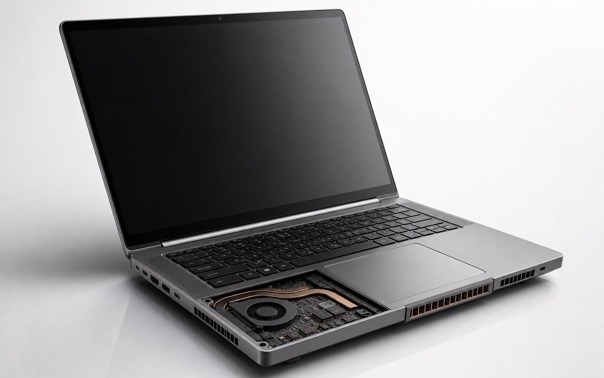

Performance first
Most demos use transform and opacity because they avoid layout reflow and usually stay GPU-friendly.
Premium web motion reference
A polished single-page website covering transform, opacity, filter, clip-path, timing, easing, transitions, and scroll-linked product motion.
Built like a design system
Most demos use transform and opacity because they avoid layout reflow and usually stay GPU-friendly.
Durations, delays, and easing are labeled so the motion can be copied without guessing.
The site respects reduced-motion preferences and removes non-essential movement when requested.
Premium motion journey
The horizontal cards show how professional motion decisions progress: intent, property choice, timing, performance, accessibility, and final polish.
Start with the user meaning: reveal, confirm, warn, guide, or create spatial continuity.
Choose transform and opacity for repeated UI motion; use filter and shadow only when the visual payoff is worth it.
Keep micro-interactions tight at 150-300ms and reserve longer motion for editorial reveals or scroll storytelling.
Use ease-out for entering content, ease-in for exits, and spring curves only when elasticity matches the action.
Create depth with sticky images, parallax offsets, glass panels, and careful contrast instead of constant movement.
Honor OS-level motion preferences so the premium experience stays usable for motion-sensitive visitors.
Animation library
Filter by motion family. Every card includes the property being animated, the recommended use case, and a live miniature preview.
Transition catalog
Transitions explain state changes rather than looping motion. These examples focus on hover, focus, active, and content-swap behavior.
Image loading animation lab
These examples show the placeholder, reveal animation, performance reason, and correct use case. Every preview uses a stable aspect ratio to prevent layout shift while the image loads.

A neutral skeleton shows the image footprint immediately. The shimmer moves only while loading, then fades out.

The image starts blurred and slightly enlarged, then sharpens into place after load. This hides compression and decoding delay.

A tinted plate approximates the image mood before the real pixels arrive. It reduces perceived flicker in image-heavy pages.

A mask opens from left to right when the asset is ready. It works well for premium product and architecture imagery.

The image begins slightly scaled up and settles to 100 percent. This creates a soft cinematic arrival without moving layout.

Color returns after the image is available. It is useful when you want a refined reveal without spatial motion.
A circular mask expands from the center, similar to a camera aperture. It should be reserved for special media moments.

A thin scan highlight passes over the placeholder while loading. It suggests processing without using a generic spinner.
Two panels move apart once the image is decoded. This is more theatrical, so use it for a small number of premium images.
The loaded image fades in while translating a few pixels upward. It pairs well with card reveal animations.
The image resolves from soft focus to sharp focus. This is best when the source image has strong depth or texture.
A border frame draws around the media while loading, then the image fades through it. It suits premium branded visuals.
Live scroll process
This is not a pasted image gallery. The device is built from layered HTML and CSS, then controlled by scroll progress: the lid opens, the internals reveal, heat builds near the processor, air enters through the intake, and warm air exits through the rear vents.

The scene now uses a photorealistic laptop asset with aluminum body, keyboard, hinge, ports, vents, and an exposed cooling bay instead of a flat CSS mockup.
As you scroll, the screen sheen and callouts make the physical structure clear before the cooling path is highlighted.
The exposed service-panel area is emphasized so the fan, chip area, heat pipe, and vent path become the focus of the scene.
The CPU glow and expanding heat rings show where thermal energy starts. The fan speed increases only after this step becomes active.
Blue particles move from the lower vent area toward the fan. This shows the intake path instead of simply placing random arrows on top.
Amber particles flow across the heat pipe and leave through the exhaust vents. The progress rail fills to confirm the process is complete.
Accuracy notes
These properties usually avoid layout recalculation. Avoid animating width, height, top, and left for repeated UI feedback.
Buttons and controls should usually transition in 150-300ms. Longer motion belongs to page reveals, hero moments, or storytelling.
Ease-out feels natural for entering elements because motion starts quickly and settles. Ease-in works for exits.
People with vestibular sensitivity may request less motion at OS level. The CSS disables continuous animation in that case.